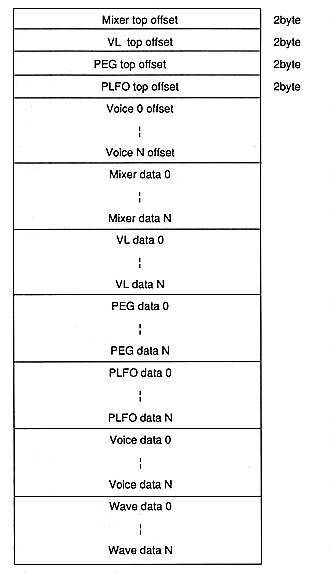

Mixer top ofset: Offset address of mixer data start position VL top offset: Offset address of the start position of velocity level conversion data PEG top offset: Offset address of the start position of PEG data PLFO top offset: Offset address of the start position of PLFO data Voice offset: Offset address of each Voice data Mixer data: Mixer data VL data: Velocity level conversion data PEG data: Pitch envelope data PLFO data: Pitch LFO data Voice data: Voice data Wave data: Wave data